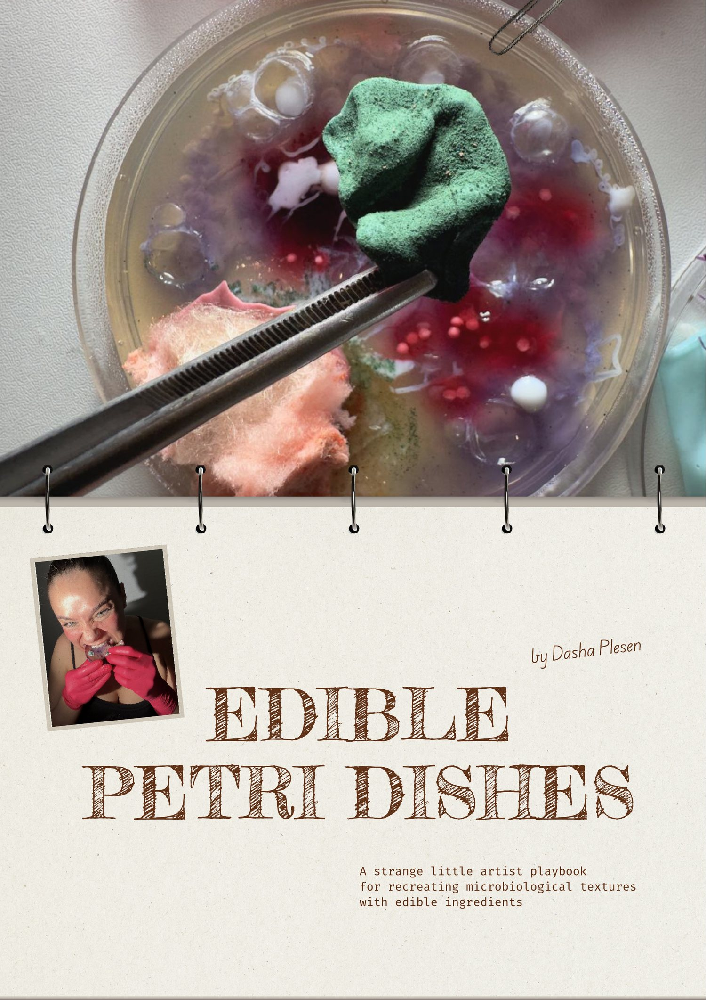
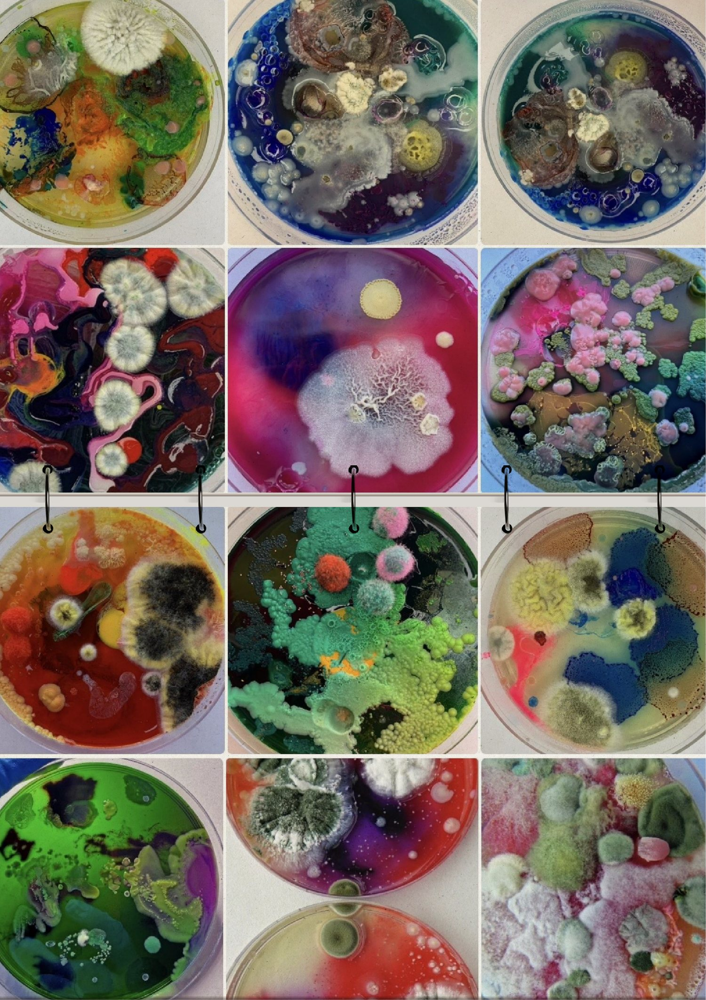
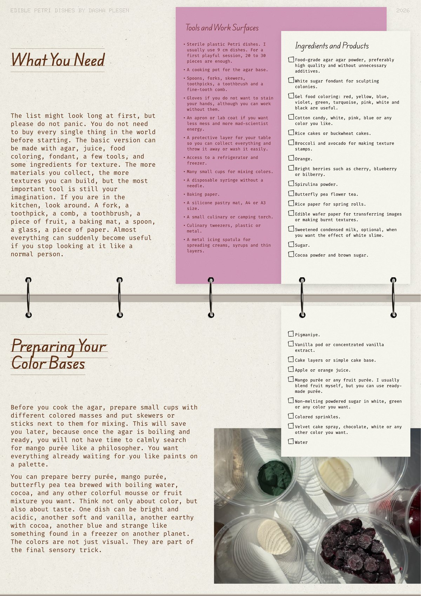

Make it look alive
Learn how to build suspicious colonies, folds, slime, fuzz and translucent membranes without growing real mold.
by Dasha Plesen / digital artist playbook
A strange little workshop for recreating microbiological textures with edible ingredients.
Build agar bases, sculpt colonies, create slime, fuzz, spores, strange skins and edible horror-garden compositions that look dangerous but taste like dessert.

inside the playbook
Universal agar base
Color bases from juice, puree, tea and powders
Fondant colonies, folded edges and strange skins
Velvet spores, cotton candy fuzz and Turkish floss hair
Cold shock agar drops, edible latex and burnt wafer paper
Final Petri dish assembly and sensory tasting ritual
The guide walks you from preparation to final assembly: how agar behaves, how to pour color bases, how to make folded colonies, how to create velvet, powder, hair, skin, drops and decay effects.
It is intentionally written like a working artist notebook: direct, funny, sensory and permissive enough for you to invent your own organisms.

for whom
artists and makers who want a weird material experiment
food stylists, pastry people and edible prop lovers
content creators looking for something scroll-stopping
friends, dates and studio nights that need a little harmless chaos
after a few hours
Learn how to build suspicious colonies, folds, slime, fuzz and translucent membranes without growing real mold.
Use agar-agar, fondant, rice paper, fruit, powders and cotton candy to build tiny edible ecosystems.
The playbook is written as an artist notebook: playful, forgiving and built for experiments.

what you need
Start with agar, juice, food coloring, fondant, a few kitchen tools and texture ingredients. The playbook shows how a fork, comb, toothbrush, fruit, rice paper or cake powder can become a mold tool.
Buy the digital playbook - $80common sense
This is an edible imitation workshop. You do not add real mold, real bacterial cultures or anything scraped from the real world. You work with hot agar, sugar and kitchen tools, so allergies, heat and fire safety still matter.
questions
No. The whole point is to recreate the visual language of microbiology with edible ingredients, without real mold, bacteria or living cultures.
No. Petri dishes, agar, food coloring, fondant, cups, basic kitchen tools and a few texture ingredients are enough for a first session.
A 20-page digital artist playbook in English with recipes, material logic, safety notes, ingredient lists, techniques and visual inspiration.
Yes. The guide gives a base system so you can replace juices, purees, powders, colors and textures according to taste and allergies.
life is a strange fairy tale
Get the 20-page Edible Petri Dishes playbook by Dasha Plesen and spend a few hours inside color, texture and harmless sensory chaos.
Get it now - $80